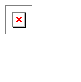
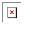

Well, I was opening up N and ... bah, look at the image.
Has anyone ever found this? I don't seem to be able to reproduce it.
My question is:
WTF?

I have no idea, Maybe The game "hiccuped" and the drone shot too early
Well, I was opening up N and ... bah, look at the image.
Has anyone ever found this? I don't seem to be able to reproduce it.
My question is:
WTF?
 for some reason I dont Know HOW to save levels! Right now I have 3 in a word doc. waiting to be saved. Can ANYONE tell me how to save them??!?
for some reason I dont Know HOW to save levels! Right now I have 3 in a word doc. waiting to be saved. Can ANYONE tell me how to save them??!?What do you mean by 'saved'?
If it's in a word .doc then isn't it already saved?

Personaly I use notepad. Just hit the save button. I think it is under "file". You find that in the top right hand corner. Click the word "save". Then you type the desired name into the pretty box in the window. If it has already been taken you will get a message asking if you want to overwright the file. This you can click "yes" or "cancel". Does that help
1) Remove the need for capslock to get rid of debug mode.I think That you should put Switching jump bloks (assigned to "+" in NED)
2) Add a Ned button in the main menu, where "Play Game", "Configure", "High Scores" etc all are.
3) The ability to create your own episodes.
Those are the only three that I think are really important and definitely should be added. There's a whole bunch of stuff would be really cool, but we could easily do without.
1) & 2) would be easy to "code" whilst 3) might be a bit of a bastard. But hey, they've already coded the greatest freeware game ever, so why not?
It seems like this has been done so many times, but I have something better to offer for free...
I'll see if I can scrounge up some more examples, but.. I'll add what I do to the list as I go.
Avatars:
http://blobsandmore.com/gohan/files/razorav.gif
http://blobsandmore.com/gohan/files/farorenobg2.gif
http://blobsandmore.com/gohan/files/graphittixairuav2.png
http://blobsandmore.com/gohan/files/grungeavy.gif
Signatures:
http://blobsandmore.com/gohan/files/razorsig.gif
http://blobsandmore.com/gohan/files/cooltext2.gif
http://blobsandmore.com/gohan/files/faroresig2.gif
http://blobsandmore.com/gohan/files/gotensig.gif
http://blobsandmore.com/gohan/files/grungesiggy.gif
http://blobsandmore.com/gohan/files/jenssig.gif
http://blobsandmore.com/gohan/files/twwpatsig.gif
http://blobsandmore.com/gohan/files/xairus...fdoomiedoom.gif
http://blobsandmore.com/gohan/files/xairutextsig.gif
Wallpaper:
http://blobsandmore.com/gohan/files/ph03nix.png
http://blobsandmore.com/gohan/files/pimpedmercedes2.png (Original: http://www.highresautoimages.com/saleen/s74.html)
I made them urls for the 56k'ers, sorry if it is annoying, but.. have to be nice
Remember, be specific...
Also, I don't do animations, unless it is very easy to do...
I CANNOT DO N SIGS UNLESS YOU PROVIDE THE IMAGE YOU WANT ME TO MAKE THE SIGNATURE/AVATAR/WALLPAPER OUT OF!!!

 WELL WILL IT COME IN AN E-MAIL OR SOMETHING????!!??
WELL WILL IT COME IN AN E-MAIL OR SOMETHING????!!??


I thought a revival was 2 months, but anyway anyone else notice that this thread is
1 2 3 ...4 pages in length?
 there are some awesome ones at Stick page
there are some awesome ones at Stick page 

 I dont know what any of those mean can you quote on this message with some examples of each
I dont know what any of those mean can you quote on this message with some examples of each  and about some of you other people are saying if you jump off a wall just at the right time you can go through a one way door(going up)
and about some of you other people are saying if you jump off a wall just at the right time you can go through a one way door(going up)One of my mapsQuote521140000000001111500004002114000114021150GH00114002114000240FI03MI0002114002114002LH0350000000211400250001MQI0000000000211400000500000000000000025000000000000000000000000000000000000000000000000000000000000000000000000000000061110000000000000004040?A0000000000000314014E0C34000000000000215021A34250000000000000240020251340000000000000240000342500000000000000000002500000000000000000000000000000000000003MI00000000000000000003900000000000000000000318000GH0000000000000001MJ@0FI2000000000000000500A00000@0000000000000000000000P0000000000000000000000A000000000000000000000000000000000000000000000000000000000000000000000000000000000000000100000000000000000C00000000000000000000000000000000000000000000C4000000000000|5^48,30!10^300,36!10^348,36!10^396,36!10^444,36!10^492,36!2^252,372,1,0!2^240,372,1,0!2^180,276,-0.707106781186547,0.707106781186547!2^156,324,-0.707106781186547,0.707106781186547!2^132,348,-0.707106781186547,-0.707106781186547!2^108,324,-0.707106781186547,-0.707106781186547!2^144,348,-1,0!2^144,336,-0.707106781186547,0.707106781186547!2^84,300,0,-1!2^84,276,0,-1!2^84,252,0,-1!2^60,228,0,-1!2^60,204,0,-1!2^24,180,0,1!2^24,192,0,1!2^36,192,-0.707106781186547,0.707106781186547!2^36,204,-0.707106781186547,0.707106781186547!2^36,216,-0.707106781186547,0.707106781186547!2^36,228,-0.707106781186547,0.707106781186547!2^36,240,-0.707106781186547,0.707106781186547!2^36,252,-0.707106781186547,0.707106781186547!2^24,204,0,1!2^24,216,0,1!2^24,228,0,1!2^24,240,0,1!2^24,252,0,1!2^24,264,0,1!2^24,276,0,1!2^24,288,0,1!2^24,300,0,1!2^24,312,0,1!2^24,336,0.707106781186547,0.707106781186547!2^24,324,0.707106781186547,0.707106781186547!2^36,348,1,0!2^48,348,1,0!2^60,348,1,0!2^72,348,0.707106781186547,0.707106781186547!2^84,360,0,1!2^84,372,0.707106781186547,0.707106781186547!2^96,384,0,1!2^96,396,0.707106781186547,0.707106781186547!2^108,408,0,1!2^108,420,-0.707106781186547,0.707106781186547!2^96,432,-0.707106781186547,0.707106781186547!2^72,456,-0.707106781186547,0.707106781186547!2^48,480,0,1!0^180,276!0^180,276!0^180,276!0^180,276!0^180,276!0^180,276!0^180,276!0^180,276!7^420,468,3!2^420,444,0,1!0^420,444!0^420,444!0^420,444!0^420,444!2^420,504,0.707106781186547,0.707106781186547!2^432,528,0,1!2^468,552,0.707106781186547,-0.707106781186547!2^468,564,0.707106781186547,-0.707106781186547!2^456,552,0.707106781186547,-0.707106781186547!2^480,528,0,-1!2^492,540,0,-1!2^480,540,0,-1!2^492,528,0,-1!2^420,564,1,0!2^432,564,1,0!2^408,564,1,0!2^444,564,0.707106781186547,-0.707106781186547!2^456,564,0.707106781186547,-0.707106781186547!7^480,372,3!2^480,348,1,0!0^480,348!0^480,348!0^480,348!0^480,348!0^480,348!0^480,348!0^480,348!0^480,348!2^468,540,0,-1!2^468,528,0,-1!2^492,348,1,0!2^468,348,1,0!0^492,348!0^492,348!0^492,348!0^492,348!0^492,348!0^492,348!0^492,348!0^492,348!0^468,348!0^468,348!0^468,348!0^468,348!0^468,348!0^468,348!0^468,348!0^468,348!8^576,444,0!8^600,468,0!8^576,468,0!8^552,444,0!9^624,444,1,1,26,20,0,0,0!8^552,420,0!8^528,420,0!2^636,492,-0.707106781186547,-0.707106781186547!2^540,468,-1,0!0^540,468!0^540,468!0^540,468!0^540,468!2^468,468,-1,0!2^516,468,-1,0!0^468,468!0^468,468!0^468,468!0^468,468!0^468,468!0^468,468!0^468,468!0^468,468!9^516,396,0,1,22,16,0,0,0!9^516,396,0,1,22,15,0,0,0!9^444,468,1,1,17,19,0,0,-1!9^444,468,1,1,17,19,0,0,0!9^444,468,1,1,18,19,0,0,0!9^444,468,1,1,18,19,0,0,-1!9^480,468,1,1,19,18,0,0,0!9^480,468,1,1,19,20,0,0,-1!9^528,468,1,1,20,20,0,0,-1!9^528,468,1,1,20,18,0,0,0!0^444,468!0^444,468!0^444,468!0^444,468!0^480,468!0^480,468!0^480,468!0^480,468!0^480,468!0^480,468!2^396,468,-1,0!2^384,468,-1,0!2^372,468,-1,0!2^360,468,0,-1!2^360,456,-0.707106781186547,-0.707106781186547!2^348,444,-1,0!2^336,444,-0.707106781186547,0.707106781186547!2^180,372,0.707106781186547,-0.707106781186547!2^48,516,0,1!2^48,540,0.707106781186547,0.707106781186547!2^60,552,1,0!2^72,552,0.707106781186547,-0.707106781186547!2^84,540,0,-1!2^84,528,0.707106781186547,-0.707106781186547!2^96,516,0.707106781186547,-0.707106781186547!2^108,504,0.707106781186547,-0.707106781186547!2^132,480,0.707106781186547,-0.707106781186547!2^144,468,0,-1!2^144,444,0,-1!2^144,420,0,-1!2^144,408,0.707106781186547,-0.707106781186547!2^156,396,0.707106781186547,-0.707106781186547!2^168,384,0.707106781186547,-0.707106781186547!2^312,456,-0.707106781186547,0.707106781186547!2^300,468,-0.707106781186547,0.707106781186547!2^288,480,-0.707106781186547,0.707106781186547!2^252,492,-0.707106781186547,-0.707106781186547!2^240,480,0,-1!2^240,432,-0.707106781186547,-0.707106781186547!2^216,408,0,-1!2^216,312,-0.707106781186547,-0.707106781186547!0^216,312!0^216,312!0^216,312!0^216,312!0^216,312!9^216,276,1,1,9,9,0,0,-1!9^216,276,1,1,8,9,0,0,-1!9^216,276,0,1,9,9,0,0,0!9^216,276,0,1,9,10,0,0,0!9^216,276,0,1,9,11,0,0,0!7^216,252,1!2^228,348,1,0!0^228,348!0^228,348!0^228,348!0^228,348!0^228,348!0^228,348!0^228,348!0^228,348!0^228,348!0^228,348!0^228,348!2^276,336,0,-1!2^276,288,0.707106781186547,-0.707106781186547!2^300,276,1,0!2^324,276,1,0!2^348,300,0.707106781186547,0.707106781186547!2^372,324,0.707106781186547,0.707106781186547!2^396,348,1,0!2^204,348,1,0!0^204,348!0^204,348!0^204,348!0^204,348!7^276,252,1!7^300,252,1!7^324,252,1!7^312,252,1!7^288,252,1!7^264,252,1!7^252,252,1!7^336,252,1!7^348,252,1!7^360,252,1!7^372,252,1!7^384,252,1!7^396,252,1!7^408,252,1!7^420,252,1!2^420,348,0,-1!2^432,324,0.707106781186547,-0.707106781186547!2^456,300,0.707106781186547,-0.707106781186547!2^480,276,0.707106781186547,-0.707106781186547!7^372,276,2!7^396,300,2!7^636,204,2!7^636,228,2!7^636,252,2!9^612,204,1,1,25,10,0,0,0!2^612,252,1,0!2^624,252,1,0!2^600,252,1,0!0^624,252!0^624,252!0^624,252!0^624,252!0^612,252!0^612,252!0^612,252!0^612,252!0^600,252!0^600,252!0^600,252!0^600,252!0^600,252!0^612,252!0^624,252!7^588,204,0!7^588,228,0!7^588,252,0!7^612,180,1!8^684,180,1!7^660,276,0!7^660,300,0!7^660,324,0!7^660,348,0!7^660,372,0!7^660,396,0!2^420,312,1,0!2^684,240,1,0!9^708,264,0,0,29,11,1,-1,0!0^708,264!0^708,264!0^708,264!0^708,264!2^636,252,0.707106781186547,-0.707106781186547!9^660,240,1,1,28,9,0,0,-1!2^648,168,0.707106781186547,0.707106781186547!2^672,180,1,0!2^672,168,1,0!9^684,342,1,1,28,13,0,0,-1!9^684,342,1,1,29,13,0,0,-1!2^684,324,1,0!0^684,324!0^684,324!0^684,324!0^684,324!2^756,228,-0.707106781186547,0.707106781186547!7^732,276,3!2^756,372,0,-1!2^756,348,0,-1!2^756,324,0,-1!2^756,300,-0.707106781186547,-0.707106781186547!2^744,288,-0.707106781186547,-0.707106781186547!2^732,276,0,-1!2^732,156,0.707106781186547,-0.707106781186547!2^750,138,0.707106781186547,-0.707106781186547!2^768,126,0,-1!2^762,114,0,-1!2^768,102,-0.707106781186547,-0.707106781186547!2^756,84,-0.707106781186547,-0.707106781186547!2^744,72,-1,0!2^726,72,-1,0!2^684,96,-1,0!2^648,102,-1,0!2^618,114,-1,0!2^582,132,-1,0!7^684,120,3!7^648,120,3!7^612,132,3!7^576,156,3!7^576,108,1!7^612,96,1!7^648,84,1!7^684,72,1!2^540,132,-1,0!2^492,132,-0.707106781186547,-0.707106781186547!2^468,108,-0.707106781186547,0.707106781186547!2^444,132,-0.707106781186547,-0.707106781186547!2^420,108,-0.707106781186547,0.707106781186547!2^396,132,-0.707106781186547,-0.707106781186547!2^372,108,-0.707106781186547,0.707106781186547!2^360,132,-0.707106781186547,-0.707106781186547!2^336,108,-0.707106781186547,0.707106781186547!2^324,132,-0.707106781186547,-0.707106781186547!2^300,108,-0.707106781186547,0.707106781186547!2^276,132,-0.707106781186547,-0.707106781186547!2^264,108,-0.707106781186547,0.707106781186547!2^252,132,-0.707106781186547,-0.707106781186547!2^228,108,-0.707106781186547,0.707106781186547!2^216,132,-0.707106781186547,-0.707106781186547!2^192,108,-0.707106781186547,-0.707106781186547!2^180,96,-0.707106781186547,-0.707106781186547!2^168,84,-0.707106781186547,-0.707106781186547!2^156,72,-0.707106781186547,-0.707106781186547!2^144,60,-1,0!2^132,60,-1,0!2^120,48,-0.707106781186547,-0.707106781186547!2^120,60,-0.707106781186547,-0.707106781186547!2^108,48,-0.707106781186547,-0.707106781186547!11^108,36,648,96!2^732,180,0,-1!2^732,204,0,-1!0^732,204!0^732,204!0^732,204!0^732,204!0^732,204!0^732,180!0^732,180!0^732,180!0^732,180!0^732,180!0^732,180!0^732,204!0^732,204!0^732,204!0^732,180!0^732,180!9^564,132,1,1,19,4,0,0,-1!9^516,132,1,1,20,4,0,0,-1!9^516,132,1,1,20,5,0,0,0!9^516,132,1,1,21,5,0,0,0!9^468,132,1,1,19,5,0,0,0!9^444,108,1,1,18,4,0,0,-1!9^444,120,1,1,18,5,0,0,0!9^420,120,1,1,17,4,0,0,-1!9^396,120,1,1,17,5,0,0,0!9^396,120,1,1,16,4,0,0,-1!9^396,120,1,1,16,5,0,0,0!9^372,120,1,1,15,4,0,0,-1!9^372,120,1,1,15,5,0,0,0!9^348,120,1,1,14,4,0,0,-1!9^348,120,1,1,14,5,0,0,0!9^324,120,1,1,13,4,0,0,-1!9^324,120,1,1,13,5,0,0,0!9^300,120,1,1,12,4,0,0,-1!9^300,120,1,1,12,5,0,0,0!9^276,120,1,1,11,4,0,0,-1!9^276,120,1,1,11,5,0,0,0!9^252,120,1,1,10,4,0,0,-1!9^252,120,1,1,10,5,0,0,0!9^516,108,0,1,21,4,0,0,0!9^516,108,1,1,21,4,0,0,-1!9^612,120,1,1,14,2,0,0,-1!9^576,132,1,1,16,2,0,0,-1!9^612,120,1,1,12,2,0,0,-1!9^612,120,1,1,18,2,0,0,-1!9^612,108,1,1,20,2,0,0,-1!2^204,180,-0.707106781186547,-0.707106781186547!2^216,168,-0.707106781186547,-0.707106781186547!2^228,156,-0.707106781186547,-0.707106781186547!2^240,144,-0.707106781186547,-0.707106781186547!2^216,156,-0.707106781186547,-0.707106781186547!2^204,156,-0.707106781186547,-0.707106781186547!2^192,168,-0.707106781186547,-0.707106781186547!2^192,180,-0.707106781186547,-0.707106781186547!2^180,168,0,-1!2^180,180,0,-1!2^192,192,0,-1!2^180,156,-0.707106781186547,-0.707106781186547!2^180,156,0,-1!2^168,144,0,-1!2^168,132,0,-1!2^180,144,0,-1!2^192,132,0,-1!2^192,144,0,-1!2^192,144,0,-1!2^204,144,0,-1!2^180,132,0,-1!2^180,120,0,-1!2^168,120,0,-1!2^204,84,-1,0!2^216,96,-1,0!2^228,96,-1,0!2^204,72,-1,0!2^156,108,0,-1!2^180,60,-1,0!2^132,84,0,-1!2^144,36,-1,0
*snif*
someone other than me likes it...
*snif*
the pipe was like my grind rail. I really tried to theme this after a real skatepark, not just an N trick jump showcase map, and what skate park is complete without a grind rail! I know it looks dumb. Also, I needed another way into the bottom level... I don't know if you noticed but getting down there from the right side coloumn and the top loops is kind hardish...
*snif*
how many of those demos did you watch of mine? I have like 20 minutes worth I thinkLets say I had some free time yesturday.
---
I had a great park going yesturday but my PC melt down... I was sad
---
I'll back up judge like we do in NC... I'll just judge the judges so they don't instantly loose.
 oMG you too I was making a Tottally AWESOME DDA but the power went out
oMG you too I was making a Tottally AWESOME DDA but the power went out 
here it is on NumaMy tsm ntreeHope u likeQuote00100000100000100000100900060900060900060900068708708708708708708708700000000000000000000000960960960960960960960968000708000708000708000700100000100000100000100900060900060900060900068708708708708708708708700000000000000000000000960960960960960960960968000708000708000708000700100000100000100000100900060900060900060900068708708708708708708708700000000000000000000000960960960960960960960968000708000708000708000700100000100000100000100900060900060900060900068708708708708708708708700000000000000000000000960960960960960960960968000708000708000708000700100000100000100000100900060900060900060900068708708708708708708708700000000000000000000000960960960960960960960968000708000708000708000700100000100000100000100|0^36,84!0^180,84!0^324,84!0^468,84!0^612,84!0^756,84!0^756,228!0^612,228!0^468,228!0^324,228!0^180,228!0^36,228!0^36,372!0^180,372!0^324,372!0^468,372!0^612,372!0^756,372!0^756,516!0^612,516!0^468,516!0^324,516!0^180,516!0^36,516


HEY GUYS AND GALS, I"M NEW TO THE INTERNET AND JUST FOUND YOUR SITE. YOU GUYS SEEM REALLY COO AND INTELLECTUAL. I"M GONNA HAVE TO CHAT HERE MORE OFTEN. SOMEONE PLEASE RESPOND TO THIS AND YOU"LL MAKE MY DAY!!!
I made this for anyone who wants to use it[SIZE=7]


 OH MEEEEEEEEEEEEEEEEEEEEEEEEEEEEEEEEEEEEEEEEEE MEEEEEEEE WANT[SIZE=7]
OH MEEEEEEEEEEEEEEEEEEEEEEEEEEEEEEEEEEEEEEEEEE MEEEEEEEE WANT[SIZE=7] )but can you
)but can you Lol, not very sutle but it gets the job done. Ill try and do the best i can. What do you want.
Background: ?
Image: ninja
Name: Kavukamari or none?
*jumps on search, thus breaking it to pieces*
 im thinking ov becoming a Signature Packrat. so could you like...post your siggy's here
im thinking ov becoming a Signature Packrat. so could you like...post your siggy's here I found out you don't have to tell meQuoteBUT TELL ME HOW YOU PUT THEM ON THE INTERNET 'cause I don't know
The sigs that wil display here are already on the interent.
Yep.
[img]Image URL here[/img] [url]URL here[/url] [url=URL here]Text to click on here[/url] [url=URL here][img]Image to click on here[/img][/url]
If you know basic HTML, BBCode's even more of a snap.
 )but I can't post them: how do I
)but I can't post them: how do I don't double post.but you can double smilie
but I didn't, but if I did  (< ) I was trying not to post ALL CAPITALS < )
(< ) I was trying not to post ALL CAPITALS < ) hmm.........did this work YES IT WORKS
hmm.........did this work YES IT WORKS  why can't the person who POSTED it lock it WE HAVE RIGHTS TOO YOU KNOW!!! ) have you gotten <click here
why can't the person who POSTED it lock it WE HAVE RIGHTS TOO YOU KNOW!!! ) have you gotten <click here  does this count as a revival? ? o.k. i'm better now ( + ) sommoned evil gods to be flamed
does this count as a revival? ? o.k. i'm better now ( + ) sommoned evil gods to be flamedHey guys! I've been playin N since 1.4 came out but just recently decided I wanted some new maps. I figured with a game this cool there had to be an online community somewhere
In case you're actually interested, I'm a Record Producer/Engineer & Bassist in Nashville, TN--and no, I don't like country, there's actually a huge rock scene here. ..And there you have it
PLEASE POST SIGS(please ) *sniff*(ouch) I think "it"s Uhhhhhhhhhhhhhhhhhhhhhhhhhhhhhhhhhhhhhhhhhhhhhhhhhhhhhhhhhhhh...


 *...I dont know maybe "it" isn't "it" maybe "it"s "ti" if noone is using this Keron or sweep or somebody lock it
*...I dont know maybe "it" isn't "it" maybe "it"s "ti" if noone is using this Keron or sweep or somebody lock it  Hi lets start with my name, i'm Kavukamari
Hi lets start with my name, i'm Kavukamari  i'm sort of loud at school most of you wouldent like me (good thing im on a forum )and I live in Hawaii(bwahahahahahahahaha I got Legacy early
i'm sort of loud at school most of you wouldent like me (good thing im on a forum )and I live in Hawaii(bwahahahahahahahaha I got Legacy early  [see below{third paragraph}]) im new yet not in a way I love N and play it almost evry day. I LOVE legacy(the new lvl pack for N) I hope to get 200 posts to be able to be in control of my posts and stuff(don't look at me like that you know what I mean )and I hope you all like me BYE
[see below{third paragraph}]) im new yet not in a way I love N and play it almost evry day. I LOVE legacy(the new lvl pack for N) I hope to get 200 posts to be able to be in control of my posts and stuff(don't look at me like that you know what I mean )and I hope you all like me BYE  ) (but you can talk about or explain your paragraph )
) (but you can talk about or explain your paragraph )C'mon, Jiggerjaw, don't be such a pessimist queerpium petard [/inside joke]. I noticed that too, but I also noticed that on my computer, the huge quote thing I made at school had been simpified down to a smaller number (around 30) quotes. At school, it didn't do that, so my conclusion: it works on some computers/browsers, and on others, it has a limit.Umm, that's already happening, look at the last few posts...we're losing old quotes. I don't know how, but they're disappearing...Might as well lock it man, sorry.Yeah. I just hope it doesn't get to a point where it is so big it is impossible to add anything else.all we can do is waitWhat do you mean "straight down"? Oh well, man, this is fun.how far before it just goes straight down?It is beautiful.It is bending!Erg random?i like honey but i can only have so much b4 i start to feel sick its like that with all sweets, specially chocolate. i like jam on english muffinsSure, I love it with butter, or sometimes even jam is good as well. Oh, and honey. I like honey.Done. Can we now talk about toast?Okay guys, try not to post at the same time as other people. I know it's hard to avoid this, but just try. If it does happen that two people quote the same person, just quote the post of the first person to have posted. And if you posted after someone else with the same amount of quotes, you should delete your post (if you are a MetaNember.)Quote: Azmilion, March 06, 2006 05:59 pmArcanite Reaper,HOOOOO!Gotta love inward bending.It's starting to bend inwards.How big is this pyramid going to get?Haha, question swap. Ask a question, get an answer. Giovanni also thinks question swap is fun.I just spend five whole hours on Question Swap. No lie.Well, spam is allowed in Messageboard Games. See, this topic is actually totally random, but hella fun.Whoo, it's starting to look like a pyramid!No, but that's not a bad idea. Then again it might be tough because not everyone would know of a funny quote from the other person.I thought the point of this game was to use quotes we thought were humorous in other posts in the forums from the person above us.JiggerJaw Screwed up the game! Get him!Oh, man, just wait until you get down to just a few levels left. It can be incredibly frustrating.Seriously the Legacy is kind of addicting.Yeah right... let school come before the "Legacy." That's a funny joke there.Meh. I'm trying to hold off so it doesn't come in front of my schoolwork. The few I've played are great, though.I don't understand how that would happen, but okay. Any others?Okay, simple, really: Just quote the person above you, and say something. The goal is to make bigger and bigger quotes. We can make a conversation out of this as well. Remember, always quote the entire post of the person above you. Enjoy. Okay, here's a topic, how's everyone doing on "The Legacy"?
I have yet to play Legacy as it Defunkticates my computer.
Sorry, that was spam.

I'd suggest you remove the "what day you'd like to write on" part of the "application". Too many people are in too many different timezones for a day by day system to work with any degree of success.O.K. ill add your name and make the changes BUT I will keep Me posting MY paragraph EVERY HAWAIIAN WEDNESDAY
Instead I'd do this like "The Epic" and just have an order. The next person in line gets a certain amount of time to write the next paragraph, and if they miss their deadline it simply passes onto the next person in line.
And, out of curiousity, why do you want people to PM you their applications. For that matter, why do you want people to apply at all? Why not just have a simple signup thread where people can put their name down if they want to participate. You would still be free to reject their paragraphs if you didn't like them.
And finally, I will put my name on the list tentatively. I'm free to write any day of the week.
I just gotta add that I love the concept of "Hawaiian Wednesday". It sounds like something American business execs would dream up to improve company morale
again: in the P.M. please )*Yes! ADHD as a disability. Disabled people are retarded. It's correct terminology! You've tried to prove that you are not retarded by pointing out you are! What the hell is your point?SHUT THE F**K UP, I HAVE ADHD AND IM THE SMARTEST KID IN MY CLASS
Also, having ADHD does not excuse you for being an idiot. How can you "not get" this concept? You've spammed that over multiple meaningless topics for no reason. Why???
*runs to scream bad things at maestro* *abrupt fusion of evil and good attitudes* I usually pump my Anime OST Mix CD into my ears while playing N. I have different songs like...Neon genesis, NEON GENESIS
Ride on Shooting Star
READY STEDY GO!
I think I can
~Asterisk
Inner Universe
And the themesong to Neon Genesis, which I forgot the name of. There are also 13 more songs on there. God, I love that CD
ME LOVE NEON GENESIS Alright.How 'bout mine
Now, I joined your forum.
How many more forums will I join? Only time will tell.
 <(click it) )
<(click it) )00000000000000000000000000000000000000000000000000000000000?@000000000000KH0000000BE00000?@00000JI00000000000000BE00000000000?@0000000000000000GL000BE0000000000000000FM000000000GL00000000000000?@00000FM00000000000000BE0000000000000000000000000000000000000000?@000000CD0000000000000BE000000>A000000000000000000000000000GL000000000000KH0000000FM0000KH000000JI0000000000000JI00KH000000000000000000000JI00000KH000000000000000000000JI0CD00000000?@000KH000000>A00000000BE000JI0000000000000000000000000000?@000000000000000000000BE0000000000000000000000000000000000CD000GL0000000000000000>A000FM00000000000000000000000000000000000000000000000000000KH000KH0000000000000000JI000JI0000000000000000000000000000000000000000000|5^132,504

0000000000000000000000000000000GOOOOOOOOOOOOOO000000GK1O111O1O1O1O1110000GK1O111O11111O1111O000O1111111O111O111O1100000JO111O111O111O1O11O00000FJO111O111O111111O0000000FJO111O11111O111000000000000000000000OO000000000;<00000000000P0000000001J1<0000;<000Q00000000;11CB11001M1<0000000000:1BJ1110;1JE1<0000000000:11C0001C11D1100000000000:=000:D1K11100;<000000000O000:11K=000:=000000000P00000:=00000000000000QQ00000000000000000GK1Q1Q111Q1Q1110000000K1Q11111Q1Q1111Q000000Q1PQ1Q111Q111Q1100000000FJ1111Q111Q1Q111000000000FQQQQQQQQQQQQQ0000000000000000000000000000007<7<7<7<7<7<7<070000071111111111111111Q00000:19;9;9;9;9;9;9;1Q00000;18:8:8:8:8:8:8:1O0000061111111111111111O00000006=6=6=6=6=6=6=0600000000000000000000000|5^36,564
This next DIMENTION would take away everything N is to me.ME WANNA PUT DAT IN SIGGY
And you're plenty ARISTIC. You're just not very artistic.
(please) )  ) at the end of the month can I make a compillation of "The Daily Stick" issues?
) at the end of the month can I make a compillation of "The Daily Stick" issues? >with my pants]) ])
>with my pants]) ]) ) ) )Little Things(in my pants)
) ) )Little Things(in my pants)Actually that would be good to have someone to make the daily stick...Um I mean
[/sarcastic] (ow) *rubs head*Didn't you know? It's coming out next week! Along with TNG AND 1.5!!Do,Do,Do y-you m-m-mean N v. 1.5 is c-coming on the (lets see 6-7-8-9 *on hand:1-2-3-4*) about the 12th?
TEH H4X!1!


 ) I just had a brain boom (sorry i'm feeling sort of stupid right now ) what if you use a scripting thing to turn the #'s into an executable
) I just had a brain boom (sorry i'm feeling sort of stupid right now ) what if you use a scripting thing to turn the #'s into an executable ")
For 85-3: Dodging Bullets, the only thing I can say is just to find cover. Lots of it. The fact that there are so many chainguns makes it almost impossible to predict when they'll start to fire. Take it slow, and when you hear the powering up of a chaingun, run for cover.
And get the gold. Gold is good.
Kavukamari: why not try completely different engines, away from Flash?
diffrent engines  brain boom! (sorry remember: when I say that 1. i'm either feeling stupid or 2. i'm drunk on bad sugar cane [yes you can get drunk on the stuff [img]http://img205.echo.cx/img205/8738/drinks4cz.gif[/img] ]) ) yes I mean it
brain boom! (sorry remember: when I say that 1. i'm either feeling stupid or 2. i'm drunk on bad sugar cane [yes you can get drunk on the stuff [img]http://img205.echo.cx/img205/8738/drinks4cz.gif[/img] ]) ) yes I mean it  I think we should at least try to decifer the italian text (or maybe drag it over the scource text)yup try it why don't we send our little friend an infinite link as a present
I think we should at least try to decifer the italian text (or maybe drag it over the scource text)yup try it why don't we send our little friend an infinite link as a presentA sorta 'duh' recommendation would be, have a look at some of the top rated tilesets (search for 'tileset', or just look at top rated incomplete maps) on NUMA for some tips.
Other than that, if you find something you think looks swell, USE IT! The gameplay can figure itself out later...
) but can't make good ones so I thought i'd make a chain thread to get some ideas. ), play and rate the one before it, someone rates yours, lather rinse repeat( ). ) so one of you guys will have to start this I DO have an unrated mine jumper (well, semi-unrated ) )that has to be the silliest thing ever, and its in the wrong place, it should be in off-topic
well, that's just YOUR opinionhow is that an opinion, it should be in off topic, it has nothing to do with the N community
Ah, so that's where the sheep is from. I've had that program for a few years - I got it off a friend. I would attach it, but for the whole legality thing.
To be honest, all four of those maps aren't really that good at all.
Kavukamari, I think he's one of them. Don't trust what he says. He just wants to rate your maps down because he hates all that you stand for and is jealous of your maps. Someone should take away his moderatorship, the dirty rotten cheater. He listens to RadioheadHa.
Stop confusing Kavukamari. I'm not sure if he can handle sarcasm.
you know, that's VERY MEAN I can totally handle sarcasm 000000000000000000000000000000000000000000000000000000000000000000000000000000000000000000000000000000000000000000a000000000000000000000000000000000000000000000000000000000000000000000000000000000000000000000000000000000000000000a0000000000000000000000000000000000000000000000000000000000000000000000000000000000000000000000000000000000000000000000000000000000000000000000000000000000000000000000000000000000000000000000000000000000000000000000000000000000000000000000000000000000000000000000000000000000000000000000000000000000a000000000000000000000000000000000000000000000000000000000000000000000000000000000000000000000000000000000000000000a000000000000000000000000000000000000000000000000000000000000000000000|5^36,540!2^36,540,1,0!12^36,576!12^60,576!12^84,576!12^108,576!12^132,576!12^156,576!12^180,576!12^204,576!12^228,576!12^252,576!12^276,576!12^300,576!12^324,576!12^348,576!12^372,576!12^396,576!12^420,576!12^444,576!12^468,576!12^492,576!12^516,576!12^540,576!12^564,576!12^588,576!12^612,576!12^636,576!12^660,576!12^684,576!12^708,576!12^732,576!0^756,576
Here's another 3-tile one.
00000000000000000000020000000000000000000000>0000000000000000000000000000000000000000000000000000000000000000000000000000000000000000000000000000000000000000000000000000000000000000000000000000000000000000000000000000000000000000000000000000000000000000000000000000000000000000000000000000000000000000000000000000000000000000000000000000000000000000000000000000000000000000000000000a000000000000000000000000000000000000000000000000000000000000000000000000000000000000000000000000000000000000000000000000000000000000000000000000000000000000000000000000000000000000000000000000000000000000000000000000000000000000000000000000000000000000000000000000000000000000000000000000000000000000000000000000000000000000000000|5^36,540!2^36,540,1,0!12^36,576!12^60,576!12^84,576!12^108,576!12^132,576!12^156,576!12^180,576!12^204,576!12^228,576!12^252,576!12^276,576!12^300,576!12^324,576!12^348,576!12^372,576!12^396,576!12^420,576!12^444,576!12^468,576!12^492,576!12^516,576!12^540,576!12^564,576!12^588,576!12^612,576!12^636,576!12^660,576!12^684,576!12^708,576!12^732,576!0^756,576
Done using no tiles at all. Easy, really...
00000000000000000000000000000000000000000000000000000000000000000000000000000000000000000000000000000000000000000000000000000000000000000000000000000000000000000000000000000000000000000000000000000000000000000000000000000000000000000000000000000000000000000000000000000000000000000000000000000000000000000000000000000000000000000000000000000000000000000000000000000000000000000000000000000000000000000000000000000000000000000000000000000000000000000000000000000000000000000000000000000000000000000000000000000000000000000000000000000000000000000000000000000000000000000000000000000000000000000000000000000000000000000000000000000000000000000000000000000000000000000000000000000000000000000000000000000000000000000|5^36,540!12^36,576!12^60,576!12^84,576!12^108,576!12^132,576!12^156,576!12^180,576!12^204,576!12^228,576!12^252,576!12^276,576!12^300,576!12^324,576!12^348,576!12^372,576!12^396,576!12^420,576!12^444,576!12^468,576!12^492,576!12^516,576!12^540,576!12^564,576!12^588,576!12^612,576!12^636,576!12^660,576!12^684,576!12^708,576!12^732,576!0^756,576!2^36,540,1,NaN
000000000000000000000000000000000000000000000000000000000000000000000000000000000000000000000000000000000000000000000000000000000000000000000000000000000000000000000000000000000000000000000000000000000000000000000000000000000000000000000000000000000000000000000000000000000000000000000000000000000000000000000000000000000000000000000000000000000000000000000000000000000000000000000000000000000000000000000000000000000000000000000000000000000000000000000000000000000000000000000000000000000000000000000000000000000000000000000000000000000000000000000000000000000000000000000000000000000000000000000000000000000000000000000000000000000000000000000000000000000000000000000000000000000000000000000000000000000000000OO|5^36,540!12^36,576!12^60,576!12^84,576!12^108,576!12^132,576!12^156,576!12^180,576!12^204,576!12^228,576!12^252,576!12^276,576!12^300,576!12^324,576!12^348,576!12^372,576!12^396,576!12^420,576!12^444,576!12^468,576!12^492,576!12^516,576!12^540,576!12^564,576!12^588,576!12^612,576!12^636,576!12^660,576!12^684,576!12^708,576!12^732,576!0^756,576!2^36,540,8,0
 WOOT! YAY SCYTHE: TEH 1 WHO PWND DIS CONTEST!!! sigh if only we could add sound <(teh made up smiley, no?)
WOOT! YAY SCYTHE: TEH 1 WHO PWND DIS CONTEST!!! sigh if only we could add sound <(teh made up smiley, no?)
thanks kavukan'tspellyourname.
um...You're welcome ") )
) mull
mull agape, of course it looks sort of like it's dying -age) it's sort of bad but it's my first try HEY! cool [size=veryverysmall] WORKS EUREKA!
agape, of course it looks sort of like it's dying -age) it's sort of bad but it's my first try HEY! cool [size=veryverysmall] WORKS EUREKA!Well. I am working on the smiley. As soon as i can make one properly and how i make one of course!!!! But i know how to put the expressioncopy an existing smiley, use paint to get the color dropper, get smiley yellow, then use pencil to erase the eyes or whatever is on it then draw yours.
T_T (is the expression of teh smil3y)
)ok here is one for the :mull: one, im working on some more too.you should make those into an animated e-con
agape:

 yay IT WORKS
yay IT WORKS the animated one isn;t bad, but you should clean it up, it kind of messyI don't know how, I mean i'm working with .GIF's here. can you guys help me?
< I have limited time 

 hmm I thought the ninja was in that one
hmm I thought the ninja was in that one  cool huh
cool huh meh still doesn't work BUT I WILL KEEP TRYING
meh still doesn't work BUT I WILL KEEP TRYING <(THIS IS NOT AN ENTRY FOR ME THIS ENTRY IS FOR WEDGIE)
<(THIS IS NOT AN ENTRY FOR ME THIS ENTRY IS FOR WEDGIE)Besides, you've already made a thread for your art and smileys, haven't you?who, what? ME? umm...
They're pretty nice, anyway.
I guuuess oh and PIE!!! Could you make a sig with the ninja in a shiza-ie situation like that?do you mean like he's about to die? if so SURE i'll do that
 do you like it? I can take off the words if you want.
do you like it? I can take off the words if you want.Thats cool but the first 2 and second 2 pictures use different styles of eyes.
Mcp3000:^Pink Panther's servant
<I pledge allegance, to Queen Fragg, and her mighty state of Hysteria.
Edit: Wedgie posted while I was replying. So his should be Mr. Obvious.
That's great! Could you make the height smaller and width larger? Also, a sog would be nice.umm... what's a "sog"
It's also saying dynamic pages are not allowed....
?
That's great man thanks. For the avy could I have something like an animation with n boxing?that might take a while... and I have to get off soon... I'll TRY but it'll take some time glad you like the sig
 do you like it? but I think that the "shaking" makes it look cool
do you like it? but I think that the "shaking" makes it look cool (it has WARNAGE) )
(it has WARNAGE) )Whoa! That is awesome! Perfect, and I love it. Thanks a bunch.
If I save it, and get the url will it still be animated or do I have to do something special with an animated avatar?
Oh, nevermind. Forgot it isn't like a sig. Thanks again.
 (not to be OCD but you forgot to put the W in "Wrong" )
(not to be OCD but you forgot to put the W in "Wrong" ) it sad
it sad Hmm...I thought we used to have that one here...it was with the Larger Smileys, when those were around.huh? LARGER SMILEYS where are they now I WANT TO COLLECT THEM!
 *(mumb-rrg-le-rah)* but is it a good idea? you click and a small menu comes down, and you (Mare & Raigan, etc.) put a special .txt doc for "map packs" and link it to the menu thingie
*(mumb-rrg-le-rah)* but is it a good idea? you click and a small menu comes down, and you (Mare & Raigan, etc.) put a special .txt doc for "map packs" and link it to the menu thingie NUMA has a category for "Incomplete" even though it's mostly tilesets.I mean ones that you didn't (and probabally won't) put on NUMA. Or ones that you just don't WANT to finish
.
 FLASHY!!!
FLASHY!!!@ Kavukamari's sig:
I just want people to rate my maps boo hoo It's not just about the gold and switches.
Sometimes people want to make enemies pass over the gold / mines, or hide other things behind objects. It can be useful.
Besides, it wouldn't be a problem for anyone, just an adition.
For example, the undo feature isn't also needed. You can simply delete a previously placed object.
...T_T . Does that suit it up![newbishness] what do you mean by that [/newbishness]
Yes, we need to bring that one back. It was part of the larger smilies for some reason.
How are ya liking the emoticons, Keron?
I was hoping to get more smilies but i'll E-mail it to you (if I can) YAY N IS BROWN


Yay! My smilie's being used!
How do you make smilies like that!? (Not those fat ones from the smilie creator.)
Edit: I tried, but could still use some help. I had to actually DRAW the features on that tiny smilie with MS Paint.
The Smilie:
if you other people could help I still need:The fonts from N can be found in its Credits:I don't know what the font is named so I can't get it
miniml uni05_53
FFF harmony
Just in case the topic wasnt answered, heres the link to it.
Could I have an avatar where two ninja's are girly fighting?
I revived it SORRY KERON! SPARE MEEEEEE!!!!!! *runs off screaming*0000000000001H000000:11000000000000B111<00000N000000000000>11111LH00F0000000000000FQQQQQQQQQ000000000000000000000000000000000000000000000000000000000000000000000000000000000000000000000000000000000000000000000000000000000000000000000000000000000000000000000000000000000000000000000000000000000000000000000000000000000000000000000000000000000000000000000000000000000000000000000000000000000000000000000000000000000000000000000000000000000000000000000000000000000000000000000000000000000000000000000000000000000000000000000000000000000000000000000000000000000000000000000000000000000000000000000000000000000000000000000000000000000000000000000000000000000000000000000000000000000000000000000000000000000000000000000|5^60,552
Well I'm going to get a diferent av from someone else. Sorry!Well that's O.K. I'm umm... sort of (uhh...) "Busy" yeah that's it umm... busy
been playing civilization III heh (busted) I have extracted it in the folder where I downloaded it.
Maybe I need to Host it whoah....havent seen that before. Dunno wuthappened
7.02: when we get file-based load/save, we'll be writing a totally different method of managing levels so that this sort of thing can apply to _any_ set of levels. we're hoping that a better system for level management will let people easily download and use custom level packs by anyone. but, as we told the legacy people: we can't add it to the official game because this would simply open the floodgates for everyone to request their levels be added. we learnt from the 8x episodes that it's better to not officially endorse specific user content since our choices might upset people. having said that, we're open to including links to a few recommended level packs to our download page. ultimately, it should be possible for any user levels to have totaly support of the game, including highscores.. we just need to clean up the code and make a unified interface to link the game and the highscore database, so that each level pack can be registered with a different highscore server. then each of you can host a different set of levels on your own servers, potentially allowing all ~40k user levels have highscores (without anyone needing a server that can support 24gb of database storage, which is what would be required currently!)
(hope you understood that )I'm really glad Raigan commented every single suggestion. It really makes me think that my work was worthy.
Thanks everyone who helped me out, and, of course, thanks METANET!
@ kavukamari: I think I don't need to answer...
EDIT:
YAY! Look at my post. It looks like a rainbow!
But do you want me to make one, or don't you?@ atilla, what is this studdering you speak of, I know no STUDDERINGYou obviously don't know how to read, either. I said "stuttering".
Unless you were saying you've never seen the glitch rather than mocking my spelling, which I find hard to believe. If you're running up a slope and release the left/right keys, instead of sliding smoothly to a halt, you will sometimes "stutter" - one frame it will think you're in the air, the next on the ground - until you come to a halt. It's a nuisance when you want to jump perpendicular to the slope, particularly if you need to slow down first.
Open the .theme file in Notepad. Copy all files referenced there to the theme's folder. Then change all references in the file to be relative (remove the path, only leave the file name). It should work then.
)00000000000000000000000000000000000000000000000000000000000000000000000000000000000000000000000000000000000000000000000000000000000000000000000000000000000000000000000000000000000000000000000000000000000000000000000000000000000000000000000000000000000000000000000000000000000000000000000000000000000000000000000000000000000000000000000000000000000000000000000000000000000000000000000000000000000000000000000000000000000000000000000000000000000000000000000000000000000000000000000000000000000000000000000000000000000000000000000000000000000000000000000000000000000000000000000000000000000000000000000000000000000000000000000000000000000000000000000000000000000000000000000000000000000000000000000000000000000000000|6^300,324,1,0,0,3!6^324,324,1,0,0,3!6^468,324,0,0,0,3!6^492,324,0,0,0,3*sigh* can someone make this work?
hmmm *brain boom* what if the MOTD was only for the top 20 so NEWBS would at least try to make better mapsEDIT: (for the queue line) what if NUMA were to have a random Member Of The Day at the top of every page so their maps would have a chance of getting ratedGood idea, the only problem is that there's a little over 8300 members (I think) on NUMA, so the chance that it'll be you is very small. Also only about half of the members have submitted atleast one map (I'm very unsure about that unmber, it could be about anything from 1700-7000).
That code's messed up. Somewhere along the line, it got a ":" in it, messing up the code.

AWESOME
taught me a few new tricks!
this is NOT to do with N. Groups are for certain people. Notice how your a member, thats beacuase everyone her is a member. You get to different groups by doing things. Meta-nembers have more abilities than normal members. Moderators, moerate topics and forums (duh). Admins administarte this entire forum. (once again duh) Legacy group is made up of the first 20 compleaters of the Lecagy, and they've got their own forum. Get the idea?I want MY own forum *HMMPH*
The demo only took me 2 tries.AWESOMEwhat my level or the level pack as a whole
taught me a few new tricks!
and the lvl was made to increase mine jumping abillity (and trying to get to the right place before BOOM!)
and qix, i was mad because your "gripping the un-grippable" is inmpossible for me
if we do end up overhauling the collision system in 1.5 it will be very easy to add all the different tile-based suggestions, such as this one (which is really good, i too find it annoying that this asymetry exists) plus the 1/2-size tiles (i.e little corner tiles).. etc.
and the Opposite one could be a small square on the 0 button Another level. This one is all about pushing bounce blocks around.
Umm, have you seen my Manual Nediting thread? I've kinda got it all covered already...
http://metanet.2.forumer.com/index.php?sho...c=771#entry5176
i agree that it would help make things a bit more visually interesting without ruining the look, however one aspect that hasn't been mentioned (which we're running into for future games) is that this would increase the amount of time it takes to make levels. we think this is a big factor in why people like N -- it's so fast to make a level that it's fun, AND as a result you end up doing many play-tweak-play-tweak-play iterations, which results in a better level.
if anyone has tried making a level in a 3D game (doom is the only one i ever tried.. it takes FOREVER) you'll know what i mean -- it's much different, it's such an arduous long process.
anyway.. we are planning on making the next game more complex, however there's a fine line between when the extra complexity is worth it, and when it's nice but it doesn't outweigh the cost (in this case, the extra time required to make the level). in this case i suppose you could argue that there's no extra cost since you don't HAVE to add the extra graphics..
also, there's the pleasant austerity of the fact that in N, everything _does_ something -- if you can see an object, that means that you can interact with it in some way, it's not just visual/window dressing
raigan
 *Kavukamari* I HATE YOU!!! if so count me innnn!!!
*Kavukamari* I HATE YOU!!! if so count me innnn!!!Awww. Look at these cute little ponies. aren't they just adorable? don't you just want to hug them? awwww.
Stop the foolishness ! The Resistance shall obliterate this nuisance once and for all ! I now join the holy crusade against the plague that is ponies...erm...
...im not going to be too picky on the rules... but you can't break them... you can just bend them
@TheAdster- yea that'll work
@Numa Numa and Kavukamari (and everyone else really)- i'll raise the number of maps to 5
Kavu Black (the nin-pirate) nickname "The fox" =============================== Info. Items Bandana Diamond Kunai (self made), sword Self-Camoflaguing clothes (looted) kunai case (self made) 125 dubloons (75 looted) Stats Lv 1 Swords Lv 1 brawling Lv 0 Shooting Lv 2 specialty Lv 0 Demolition Special Lv 2 climbing Lv 0 Cooking Lv 2 ropework Lv 1 repair Lv 0 Med. Lv 1 Sealegs Lv 2 str. Lv 3 Spd. Mission Not Specified END
WAIT, it's too short I don't want this one Well, the bandana is okay, and so are the camoflaguing clothes, because you're a spy, but the other things don't reallly go well. You should have a pistol and a small telescope, instead of a diamond kunai thing and a case for it. And level 5 to start with for Shooting (Assuming you have a gun and that's your fighting type.) Then 15 points to use for special levels. And HOW did you get an extra 75 doubloons? We're all supposed to start with 50.
Sorry for the LONG explanation. Welcome aboard, Fox.
I'm already kind of getting bored of this RPG. capt_weasle was right, It isn't that good...
Let's go to Skull Rock!
Zacko climbs aboard ship and sets the sails. He waits for everyone else to get on, then unties the rope. Weeeeee!
The gold delay is a result of the collision detection. Raigan and Mare would have to rewrite the code in order for it to work on rockets, and they really don't like having to do that because they didn't code it very well in the first place. It's hard to make changes.
ROCKET-DODGING COMPETITION JUDGING RESULTS as of July 24:
Rankings-
1. XX. xxxantnyxxx (48)
2. XIV. xxxantnyxxx (47.5)
3. XIX. Qix (46)
4. XII. Lamezorlad (41.5)
5. XVI. xxantnyxxx (41.5)
6. VIII. Numa Numa (38.5)
7. V. Mongy (37.5)
8. X. Evil Bob (36.5)
9. IV. xdude_rox (34)
10. III. Kavukamari (34)
11. XIII. Monkey_Of_Doom (33)
12. I. Numa Numa (31)
13. VII. Kavukamari (30.5)
14. XVII. Lamezorlad (30.5)
15. IX. TheAdster (30.5)
16. XVIII. Numa Numa (28)
17. XI. Kavukamari (27.5)
18. II. Numa Numa (27)
19. XV. Kavukamari (25.5)
20. VI. Kavukamari (22)
Model-
1. # Rockets: X/5
2. # Types of Propulsion: X/5
3. Length: X/10
4. Creativity: X/10
5. # and quality of close calls (cheating death included): X/20
I. NUMA-NUMA: Rocket Powa-
1. 1/5
2. 3/5
3. 7/10
4. 6/10
5. 16/20
Total. 33/50
II. NUMA-NUMA: Little Munchkin-
1. 1/5
2. 3/5
3. 4/10
4. 5/10
5. 10/20
Total. 23/50
III. Kavukamari: Passerby-
1. 1/5
2. 4/5
3. 8.5/10
4. 7/10
5. 14/20
Total. 34.5/50
IV. xdude_rox: Born to Scoot-
1. 2.5/5
2. 4/5
3. 7/10
4. 8/10
5. 15/20
Total. 36.5/50
V. Mongy: When the Night Comes-
1. 1/5
2. 4.5/5
3. 11/10
4. 9/10
5. 16/20
Total. 41.5/50
VI. Kavukamari: "10 x 10"-
1. 3/5
2. 1/5
3. 5.5/10
4. 6/10
5. 8/20
Total. 23.5/50
VII. Kavukamari: Tendrr Futt-
1. 1/5
2. 3/5
3. 7/10
4. 6.5/10
5. 13/20
Total. 30.5/50
VIII. NUMA-NUMA: The Rocket Quadruo-
1. 4.5/5
2. 2.5/5
3. 3.5/10
4. 8.5/10
5. 16.5/20
Total. 35.5/50
IX. TheAdster: Goldmining-
1. 3.5/5
2. 4.5/5
3. 3.5/10
4. 6.5/10
5. 11/20
Total. 29/50
X. Evil Bob: State of Country-
1. 4/5
2. 4/5
3. 7.5/10
4. 8.5/10
5. 13.5/20
Total. 37.5/50
XI. Kavukamari: Why the doors-
1. 1/5
2. 1.5/5
3. 7.5/10
4. 6.5/10
5. 11/20
Total. 27.5/50
XII. Lamezorlad: The Cheap Washing Machine (Stains Expected)-
1. 5/5
2. 4.5/5
3. 4.5/10
4. 9.5/10
5. 18/20
Total. 41.5/50
XIII. Monkey_Of_Doom: DDA- Diminutive Death Arena-
1. 3/5
2. 2.5/5
3. 8/10
4. 6/10
5. 13.5/20
Total. 33/50
XIV. xxxantnyxxx: 20 rocket dodge +%2-
1. 5/5
2. 3.5/5
3. 9.5/10
4. 9/10
5. 20.5/20
Total. 47.5/50
XV. Kavukamari: Mem chip 2A-334AS-
1. 3/5
2. 3/5
3. 3/10
4. 7/10
5. 9.5/20
Total. 25.5/50
XVI. xxxantnyxxx: The Rocket Dodger Deluxe-
1. 5/5
2. 4/5
3. 6.5/10
4. 9/10
5. 17/20
Total. 41.5/50
XVII. NUMA NUMA: rocket er um its a rocket OK!!!-
1. 4/5
2. 2/5
3. 2/10
4. 6.5/10
5. 13.5/20
Total. 28/50
XVIII. Lamezorlad: that offcenter shape-
1. 2/5
2. 2/5
3. 6/10
4. 7.5/10
5. 13/20
Total. 30.5/50
XIX. Qix: A Little Abstract-
1. 4.5/5
2. 3.5/5
3. 10.5/10
4. 8.5/10
5. 19/20
Total. 46/50
XX. xxantnyxxx: The R0cket D0dger Deluxe [EXTENDED]-
1. 5/5
2. 3/5
3. 9.5/10
4. 9.5/10
5. 21/20
Total. 48/50
--------------------------------------------------------------------
Ok... so thats the 20 submissions that have been received as of today... as you can see i rated pretty harshly on most of these... the reason? because i didnt want to have 20 maps with scores ranging between 30 and 40... so i made them range between 20 and 50
I am too laxy to lopk at the 1 pag what is the 1 st sfore for (sorry for spelling im laxh for ths foo[god i'm terribl])
What?
i don't really get this. could you explain it a bit more. and you go back to school on July 30? that sucks. i don't go back 'til August 20 something.
it would be cool to see the original n, kiki'n it old schoolUmmm...why? There is barely any difference in gameplay and like no difference in graphics and it just means there are less levels and no ulockables. So, what's the point?
Would ya'll rather have this happy little fellow resting at the top of the forum?
Rating Rewind;Have a [back] button next to the RATING box (the Ninja pics) and it could only be allowed by arachnid
If you've been sniped and has been confirmed by Nid', you may change your rating and number of rating to what it was before. Somehow . . .
has two r's in his name.yahoozy_Guacamole: actually he has 3 r's in his name
>^Believe It!
here's more smilies:Those faces make me think worms...just the eyes!
*ooooohhh* *aaaahhhh* *Wooooaahh* *wooooowwwww* *cooooolllll* (and sorry if this has been said before [I tried searching for it but couldn't find it])^ I have no idea either.
And how do you make the smiley face in that color scheme? I can't get it right.
My smiley: Crazy roll

Some guy named a_m_i_r_s hacked 00-0. The top three spots all belong to cheaters now.
Well on the top od did you know that hex coulors work? Greyish Blue
[color=#569da1]Greyish Blue[/color]...
[color=denim]denim[/color]cause most colores it doesn't understand DON'T WORK
Keron, you totally don't need an individual thread for each of your maps - we have a go at most n00bs for doing anything like this.
So, I've merged them all. Keron Cyst's Maps, all in one handy thread.
Go crazy.
 wheeeeeeeee MWAHAHAHHHAHHAHHHAAHAAHHHAAHHAHHAAA
wheeeeeeeee MWAHAHAHHHAHHAHHHAAHAAHHHAAHHAHHAAAI'm sorry that 4 or 5 of you had to kill yourselves. I know this is boring. And I know I'm not having fun. I haven't been on much lately because I really hate this game. So, without further ado...
WOULD A MOD PLEASE DELETE THIS!?
Aah, that felt good.

Looks nice. Except I think you could've done nicer on the writing. He looks kinda cute, hmm?
And maybe a switch to raise the water level. That could be reusable or some maybe not. That way they wouldn't be able to get up high until they switched the water level. There could also be water puzzles that need you to press many different switches that raise the water different levels. You would have to actually think before just pressing them by a random guess.
Ask Keron Cyst. PM him.
i think i know what he wants.... he wants to play the modern mod but only with SOME changes... not the new version, and not the old... hope u understand what i mean...
Looks good. I think the writing is just fine except for that little bit on the bottom right where you wrote something and dated it.I could delete it in paint.

The dove is rad, and the fox is so cute! ^^heh LIVE LIIIIVVEE (and @kirby, it's a small tree
This reminds me, I should ressurect that art thread again some time.
 cool new smiley)
cool new smiley)wow, nice, I like the bird.
I'm sorry, but none of those are eligable. They all use more than just bounce block propulsion, but not enough to qualify for medley. Plus, some have launchpads. No launchpads are allowed in this comp. Sorry again.okay what about my newest map:
 <cliky teh piccy
<cliky teh piccy
 I made this in GIMP (heh gimp funn) it's not much, but it's a banner
I made this in GIMP (heh gimp funn) it's not much, but it's a bannerPretty cool. Make all the white transparent and it'd be perfect.one problem, I don't know how (in GIMP at least)


I am afraid that yours doesn't count, as it was past the time that I stated was the end of the contest, probably becuase I didn't post you didn't realise that I had closed the contest, but I had changed the topic name to judging started, so you should have realised, sorry...
Soaked wigs made from your pants come out.
Put's in an End of Evangelion DVD.
Well...it's nice to see some creativity on the forums...holy CRAP, TEKTITES NOOOOOO! aah oh no the octoroks are trying to kill meee!!!
Just keep in mind that not all games' storylines have to be true to life. Take the Legand of Zelda, for example. How can a small, blonde elf and a flying, pink fairy ball-thing go inside a talking, old tree and fight off a spider begger than the tree itself? See, you wouldn't find that in real life...
Ah, crap, the tektites are coming!
Woah, I just realized that this had accidentally gotten out of my unread list...
I'll start working on those.
Edit: Kavukamari (I used a variation of the color from your sig):

* * exept the letters fading in (opacity starts at 20 then goes up to 40 then 60 then 80 then 100), and keeping the background(a different one then what I have there)
exept the letters fading in (opacity starts at 20 then goes up to 40 then 60 then 80 then 100), and keeping the background(a different one then what I have there)*bumpitty bump*Could you put all of those tags up seperately?
splodin' chipmunk (tell me if you want the speed changed, or any of the tags different):

That'd be cool. Somebody needs to make a flashing tag maker or something. Where you just load the tags up and put in the delay time. I don't have flash or anything like that
 "OMG you killed kenny!" smiley says: "wtf???" then goes and plays Nintendo DS
"OMG you killed kenny!" smiley says: "wtf???" then goes and plays Nintendo DS ...go play something like Paper Mario.


not showing 4 me so DIE BROKEN IMAGE!!!
Quote: Obby, September 23, 2006 04:25 pmNo YOU shut up!
at the end there could be a secret to beat all secrets, like super speed n, or flying n, or something like that
2394
(psst, psst, me too.)Open the .theme file in Notepad. Copy all files referenced there to the theme's folder. Then change all references in the file to be relative (remove the path, only leave the file name). It should work then.I wish i understanded what you were saying..

You do realize that some people aren't American, don't you?yeah, but the 4th `o july is just as important as halloween, and we still celebrate it, you got any holidays the whole world celebrates??? and I couldn't think of any other good holidays.
[sort of])Heh, I'm British and proud of it
(I'll try again)
 vday
vday